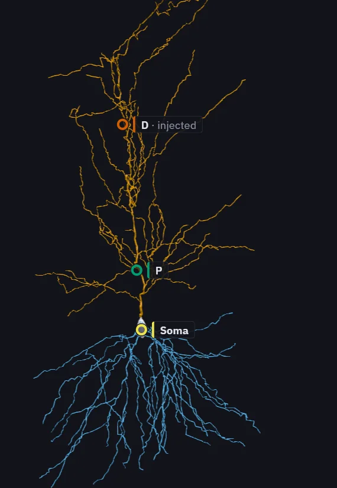
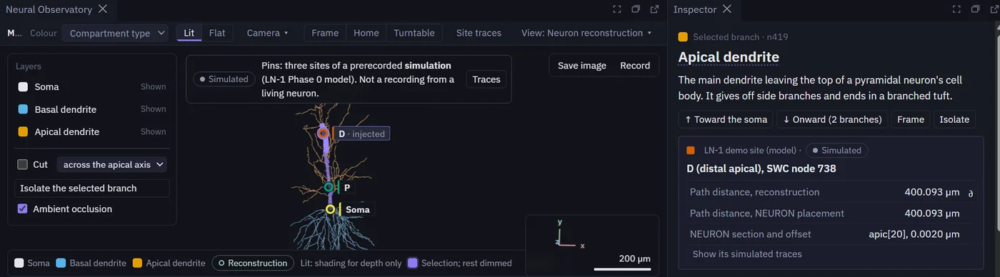
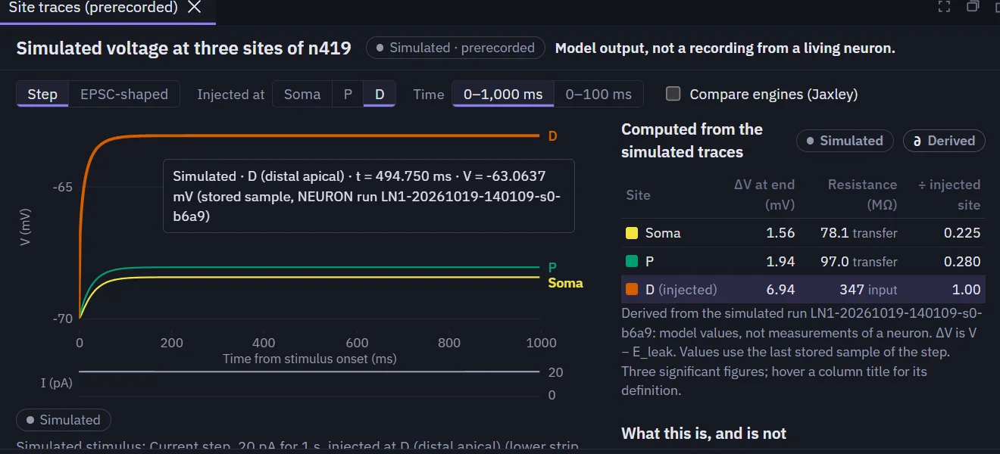
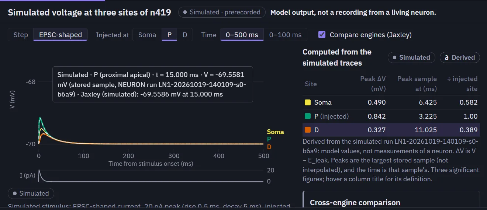
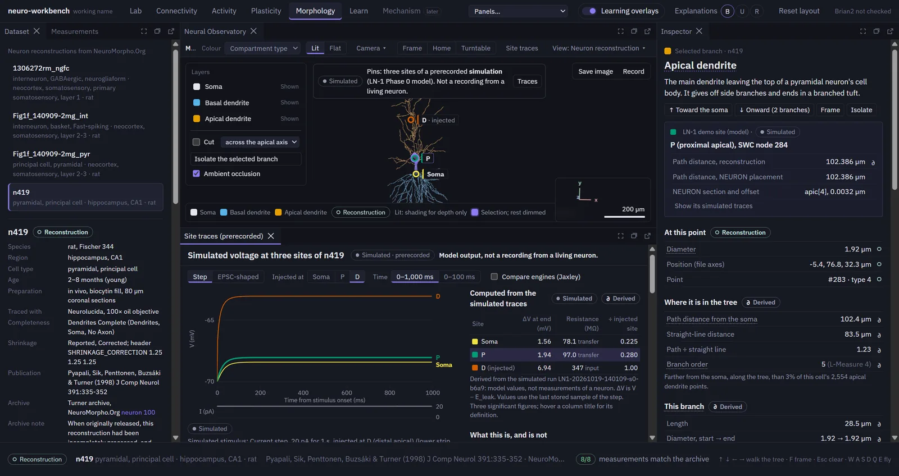

What the platform lets you do
Models are one of the main ways neuroscience tests ideas about neurons and circuits, but their output is easy to misread. The workbench is built to make a model's behaviour visible and checkable.
Open
Real neuron reconstructions from NeuroMorpho.Org in 3D, drawn at their true radii.
Inspect
Pin sites on a cell and read the stored voltage at each, with the exact sample and run behind every number.
Compare
Overlay two simulators' solutions of the same model, NEURON and Jaxley, and see exactly where they agree.
Label
Every view says whether it shows model output, a derived value or a schematic.
Demonstration: a real hippocampal neuron
Captured from the running application. The neuron is a real reconstruction; the voltages come from a computational model of it.
-
Open a reconstruction
Rat CA1 pyramidal neuron n419 from NeuroMorpho.Org, drawn at its true radii. Three sites are pinned: the soma, P (102 µm along the apical dendrite) and D (400 µm).

Reconstruction n419: Pyapali et al. (1998), NeuroMorpho.Org, CC BY 4.0; Tecuatl, Ljungquist & Ascoli (2024). -
Select a site
The pin, its branch, the inspector and the traces share one selection. The inspector gives the site's position in the reconstruction and in the NEURON model.

Reconstruction n419: Pyapali et al. (1998), NeuroMorpho.Org, CC BY 4.0; Tecuatl, Ljungquist & Ascoli (2024). -
Read the stored output
Voltage at all three sites after a 20 pA current step at D. Hovering names the exact stored sample and the run it came from; the table is computed from the stored traces.

-
Compare two simulators
An EPSC-shaped current at P, with Jaxley's solution of the same model drawn over NEURON's.



Simulated, not recorded. These traces are stored output of a passive computational model, checked against their checksums before display. No voltage was ever measured in n419; only its shape was traced from microscope images.
What has been verified
quantities on which NEURON and Jaxley agree within 0.5% for the passive n419 model; the largest difference is 0.22%.
measurements of n419 shown by the workbench that match the NeuroMorpho.Org archive.
Limitations
- Verification, not biological validation. Agreement between simulators shows the numbers are computed correctly, not that a model behaves like a living neuron.
- A simple neuron model. The n419 model is passive, with no spike-generating channels, and its parameters come from other neurons rather than being fitted to this one.
- One check still open. A cable-theory check at the distal site is unmet, so that validation phase stays open (details below).
- Early stage. The platform runs on one machine and has not been released.
Technical documentation
For researchers who want the detail.
LN-1: checking a model of a real neuron
LN-1 is the workbench's first experiment with a real neuron's shape. It asks whether a passive cable model of n419 behaves as cable theory requires, and whether two independent simulators compute the same answer. The protocol and every pass/fail threshold were fixed before any run, and failures stay on record.
- Phase 0, complete. NEURON imports the reconstruction as expected. NEURON and Jaxley agree on all 22 reference quantities (end-of-step voltage changes and EPSC-response peaks at the three sites) within 0.5%; the largest difference is 0.22%. The first comparison failed 2 of the 22 because the two simulators placed the recording sites slightly differently. A documented correction aligned the sites, and the original failure is kept on record.
- Phase 1, not complete. When the internal resistance of the dendrites is made very small, every point of the cell should sit at nearly the same voltage. At the distal site D the remaining difference is 3.08×10⁻³, against a criterion of 10⁻³. The size of the miss was predicted before the run; that explains it but does not make the check pass, so the phase stays open.
The demonstration uses the two Phase 0 runs only and counts toward none of LN-1's acceptance criteria.
How the stored data are protected from mistakes
- Exactly two stored runs can be shown, and they are fixed in the loader's code: a NEURON 9.0.2 run (d_lambda ×9, 9,863 segments, dt 0.025 ms) and a Jaxley 0.14.0 run of the same model.
- Before anything is drawn, each run must pass its manifest's SHA-256 checksums, match the n419 dataset file and the frozen protocol, and reproduce from its own traces the 22 reference quantities stored with the validation results. Today all 22 match bit for bit for both runs. A run that fails is refused with its reason.
- Every drawn point is a stored sample. Nothing is interpolated, and long windows show each pixel's exact minimum and maximum.
- Every view carries a "Simulated" label, and the panel heading stays in view: "Model output, not a recording from a living neuron."
- Opening the demonstration simulates nothing; the loader imports no simulator and writes no file.
Reconstruction n419: Pyapali, Sik, Penttonen, Buzsáki & Turner (1998), J Comp Neurol 391:335–352; NeuroMorpho.Org, CC BY 4.0. Model parameters: Rm 25,700 Ω·cm², Ri 200 Ω·cm, Cm 1 µF/cm², Eleak −70 mV. Stimuli: a 20 pA step (1 s) and a 20 pA EPSC-shaped current (rise 0.5 ms, decay 5 ms).


Methods and tools
- Simulation: NEURON 9.0.2, Jaxley 0.14; passive cable theory, cross-engine comparison
- Data: NeuroMorpho.Org SWC reconstructions, verified by checksum; L-Measure morphometry as reference
- Reproducibility: frozen protocols, run manifests (seed, configuration and environment hashes), decision records for every amendment
- Software: Python, FastAPI, pytest; TypeScript, React, Three.js, Electron
Planned next
Planned, not built
- Close LN-1 Phase 1, then add active conductances to the n419 model.
- Model comparison and neural decoding on open datasets, with the same provenance rules.